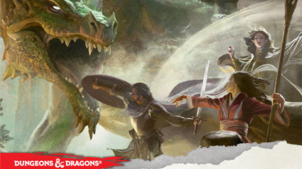

My First Experience being a Dungeon Master
So recently a few of my friends decided that we wanted to get into Dungeons and Dragons. This was mostly due to enjoying Munchkin a lot.
I started doing some research on the best way to get into D&D. First I needed to pick an edition. 3.5e seems to be a clear favourite in the past, but I had heard that 5e was simpler than any previous version. Finally I found a glowing review of the DnD Starter Kit

Turns out to have been a great choice. The kit includes a full set of dice, 5 pre-made characters, a rule book and campaign book and it was like 20$.
First time DM
I'm really glad the characters were pre-made. The rules are complicated enough for a first time group without having to deal with making a characters.
The campaign book was very helpful to me as a DM. I was really worried I would be able to improvise fast enough or well enough to keep the game flowing, but that turned out to be a bit of an over reaction.
Knowing all the rules is hard! I had to constantly check to see what actions a player could take, how ranged combat works and what kind of bonuses people would get.
All in all though, I had a really fun time and I think the rest of the party did too!